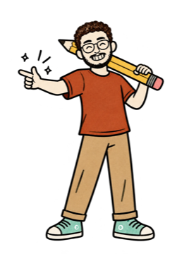

@theabhaychopra
@theabhaychopraWhat you need

- Claude: the website claude.ai or the Claude app, in any supported country. No waitlist.
- The Gmail and Google Calendar connectors: turned on in Claude, connected to the same Google account.
- Claude Pro only if you want it to run on its own every morning (scheduled tasks are on paid plans). Running it yourself works without scheduling.
Prompt 1 reads your last 24 hours of email and today's calendar and writes a one-minute brief. Prompt 2 goes back 14 days and lists everything still waiting on a reply. Claude only reads, and writes drafts in the chat. Nothing is sent unless you say so.
Connect Gmail and Google Calendar
In Claude, open Customize → Connectors (claude.ai/customize/connectors) → Gmail → Connect → sign in with Google. Do the same for Google Calendar, with the same Google account. If you link two accounts, your brief mixes them up.
Check they're on in your chat
Start a new chat → tap + → Connectors → make sure Gmail and Google Calendar are switched on. If they're off, Claude can't see your email or calendar.
It can read your email and calendar, and it can write drafts. Claude's Gmail connector can send email, but it asks for your approval before every send by default, and both prompts tell it not to send anything. To cut access, disconnect it in Customize → Connectors. (Google Workspace connectors help)
The morning brief
Paste it into a new chat each morning, or schedule it (last step).
Be my morning brief. Use my Gmail and Google Calendar. Read first, then write; don't ask me anything yet. 1. Calendar: everything today, plus tomorrow before 11 am. 2. Email: the last 24 hours. Skip anything automated (newsletters, promotions, job alerts, receipts, no-reply senders, app notifications), even if Gmail marked it important. Then write my brief, short enough to read on my phone in one minute: ☀️ THE ONE THING: the single most important thing today, and why, in one line. 📅 TODAY: each event as time · what · who. Add prep only if the invite or an email asks for it. Flag clashes. ✉️ NEEDS A REPLY: up to 5 emails, most important first: who · what they want · by when. Under each, a reply I can copy in my voice: short, friendly, first person, under 60 words. If it needs a decision from me (money, dates, yes or no), ask me that one question instead of deciding. ⏰ DEADLINES: every date or deadline in my email for the next 7 days. 🗂️ CAN WAIT: one line counting the rest, e.g. "6 newsletters, 3 receipts". Rules: use only what's in my email and calendar; never guess. Keep bank, health, legal and family details out; just write "1 personal email to check". Don't send, delete, accept or decline anything.
My brief, from my real inbox
The run in my reel (22 Oct 2026), with the screen-sharing line on, so it used roles instead of names.
Plus 4 brand threads where I'd replied and the agency owed me an answer. It reads in under a minute.
My first version let LinkedIn job alerts crowd the list (Gmail marks them important), and it agreed to payment terms for me in a draft. The "skip anything automated" and "ask me that one question" lines fixed both.
The follow-up list
Paste it in the same chat, right after your brief.
Now make my follow-up list from the last 14 days of my Gmail.
Find:
1. Emails I sent that never got a reply, where I was expecting one.
2. Things I promised ("I'll send", "I'll get back to you", "let me check") and haven't done yet.
3. Emails people sent me that are still unanswered and still matter.
For each one: who · what it's about · days waiting · a short nudge I can copy, in my voice. Sort by what costs me most if I forget it. Max 10. Skip automated emails and anything personal. Don't send anything.Make it automatic
Schedule it for every weekday morning
On a paid plan (Pro or Max), Claude can run a prompt on a schedule: in a chat, set up a scheduled task, paste Prompt 1, pick Weekdays and a time like 8:00. It runs in the cloud even when your laptop is asleep, and you find the brief under Scheduled in the sidebar. (Scheduled tasks help)
This isn't Duet
Claude Duet is Anthropic's own app, and it does more. Here's the difference, from Anthropic's Duet page and its help centre, checked 22 Oct 2026.

Enjoy your first brief
One minute of reading instead of a morning in your inbox.